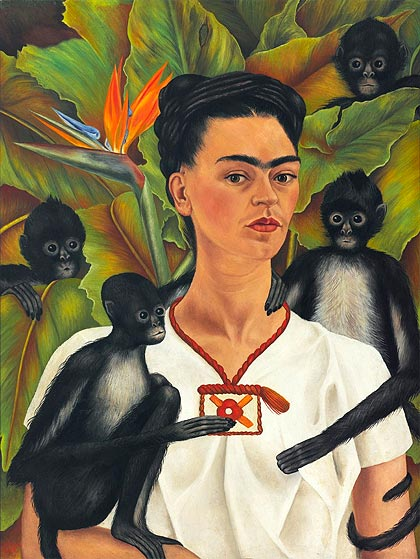

Información

Pintora mexicana. Su vida estuvo marcada por el infortunio
de contraer poliomielitis y después por un grave accidente en su juventud
que la mantuvo postrada en cama durante largos periodos, llegando a someterse hasta a 32
operaciones quirúrgicas.
Su obra pictórica gira temáticamente
en torno a su biografía y a su propio sufrimiento.autora de unas 200 obras, principalmente autorretratos, en los que
proyectó sus dificultades por sobrevivir.
